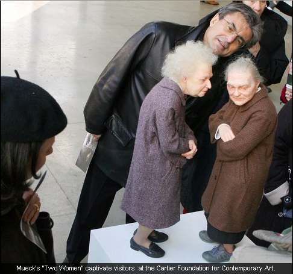
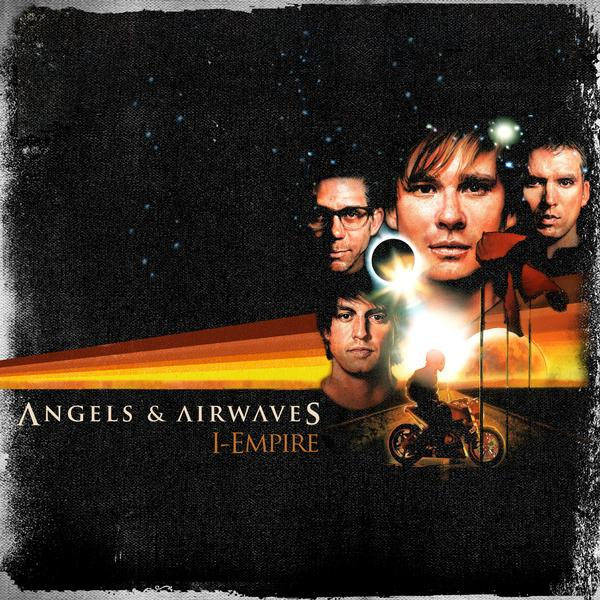

Hey, I put a lot of effort into this and it seems like it's just getting skimmed over on NUMA, even though I believe it is of high quality.
I don't really care about ratings, but comments are definitely helpful and worthwhile.
Since most has been covered, I have one dissenting opinion.
Turnoffs:
Symmetrical maps.
- The type of maps with two exit keys (for the same door) and is pattern driven (think the ink blotches that psychiatrist's use to use) and is generally just a mirror image of another half. I find it to be a lazy design gimmick and often frustrating for it's lack of good ideas. Every time I attempt to play one I'm always dissappointed as they all homogenize into one format, and a very dull one at that. There are exceptions, but not enough for me not to generalize as such.
Turnoffs:
Symmetrical maps.
- The type of maps with two exit keys (for the same door) and is pattern driven (think the ink blotches that psychiatrist's use to use) and is generally just a mirror image of another half. I find it to be a lazy design gimmick and often frustrating for it's lack of good ideas. Every time I attempt to play one I'm always dissappointed as they all homogenize into one format, and a very dull one at that. There are exceptions, but not enough for me not to generalize as such.
its avant-garde presentation seems to absolutely scream artistic endeavor. Those who read more than that into it are doing just that - Reading more into it.You would honestly consider this film to be avant-garde?
And it really doesn't matter that the film's theme is that not all men are created equally because it's a video game spectacletactless, shallow, and reductionist to the point of condensation to any living breathing being. People wanted an epic, this is the shell, shiny, glossy, and lacking in any substance or nuance. By the numbers it's garnered, one can pray this isn't the future of cinema.
I appreciate the reception it's got thus far, but considering it's Monday, Numa will be swarming with mnnml maps, so I thought I'd put this out here just in case:
http://numa.notdot.net/map/96611
Also, Gforce, I actually favorited your map The Brave Little Prankster. I really liked how you used the concept.
http://numa.notdot.net/map/96611
Also, Gforce, I actually favorited your map The Brave Little Prankster. I really liked how you used the concept.
Hmm. I would recommend instead of a mapmaker submitting 100 maps in 4 consecutive days, you rather have a mapmaker submit 25 maps one every 2 weeks or so, or some cycle.
People are overreacting. These maps aren't stellar, but I wouldn't call them horrible. To me there just as good or bad as that Blue Tetris mappack, but I suppose nobody got up in arms about that.
Here's something I've been playing with.
I think you can get a general idea of where I was going, but feel free to change all of the object placement and tiles if you want.
I think you can get a general idea of where I was going, but feel free to change all of the object placement and tiles if you want.
Anaximandar or the Futurists
Commented on epigone's since Bunniesandsheep's doesn't exist anymore . . .
Commented on epigone's since Bunniesandsheep's doesn't exist anymore . . .
Now, how do you do that for favorites, since that feature has been omitted from the new numa?
Anybody heard of CAN?
Blue Monday
It may be getting good ratings, but I was mostly interested in demos and comments when I made it.
It may be getting good ratings, but I was mostly interested in demos and comments when I made it.
As self-aggrandizing as this is, I spent a long time on this map, and, although I'm very grateful for positive ratings, I intended for this map to inspire demos.
Blue Monday
I'm not looking for ratings are further validation of the map as far as quality goes, I'd just like to see some more people play it as it was intended to have loads and loads of possibilities.
Of course, I'm not trying to beg, just raise awareness of my intentions, since I may not have in my description, and knowing the tidal pages of Numa, any change to it won't mark much significance.
Blue Monday
I'm not looking for ratings are further validation of the map as far as quality goes, I'd just like to see some more people play it as it was intended to have loads and loads of possibilities.
Of course, I'm not trying to beg, just raise awareness of my intentions, since I may not have in my description, and knowing the tidal pages of Numa, any change to it won't mark much significance.
Rated above. (pretty good, I love atob's maps with the switch hunting, and the map shows effort. The only thing is that the enemies are sometimes sketchy and involve the player to use too much precision. Also, the tileset is strictly functional--which I'm learning to come over--and leaves little room for imagination.)
My Boats They Go[B]
My Boats They Go[B]
Definitely for this, but just as a separate hit meter, not the old percentage system.
I'll enter, what the heck.
The two most recent bitesized maps just show the obvious age of most of NUMA's members.
These periods are utterly unbearable, especially because the humor isn't actually humor, just contrived eso-terrorism so the members can feel apart of something.
These periods are utterly unbearable, especially because the humor isn't actually humor, just contrived eso-terrorism so the members can feel apart of something.
Guiseppi's map got a 4.5 because it was satire. People appreciate the parody. Sure, a new user can't do parody and get rated high like that, because their work would be seen as just a noob map, but it still wasn't rated highly for the inflated quality of the map.
It's hardly satire, for one. And as a parody it's malicious and dim-witted.
I think that every time this happens and a member tries to defend it as something more sophisticated than it is just shows the wolf pack mentality around here. I was anticipating this.
Myrrhman, that map was a literal satire. It wasn't an indirect one by making fun of a subject while still remaining composed. It was literal. So literal, in fact, that you could only tell that it was a satire by who made it. It's just for fun, dude.
Well, from what I've learned from satire it's demographic commentary meant to ridicule in order to teach. I'm really unsure what the commentary from that map was besides that new members are naive and bad mapmakers, which isn't anything insightful.
I'm not as angry as my words suggest; it's just a little depressing when I see this on NUMA from time to time.
Don't know if I'm in yet, but either way, You're the one with the leopard.
It could just be me, but I feel that instead of judging the tileset, it should be overall aesthetics. We all know it's possible to have fantastic map without a tileset.
I mean, I'm expressing this seeing a lot of the hits people are getting in the rating system, and it doesn't seem like a good judgement.
I mean, I'm expressing this seeing a lot of the hits people are getting in the rating system, and it doesn't seem like a good judgement.
Cool, I appreciate the consideration.
At first I just thought it was my home computer, but it's not working on my work computer either.
I often go post maps I'm working on during the mapmaking process to see how the thumbnail will look, so I'd like to know if there actually is a problem.
I often go post maps I'm working on during the mapmaking process to see how the thumbnail will look, so I'd like to know if there actually is a problem.
I quite like your maps Shazzeh, but Digital Claws was a bit too difficult me to have the patience required.
http://numa.notdot.net/map/99619
I spent a while on this. I was bummed when I found out it was sniped, but was relieved when I realized that they had just gone down the whole page.
http://numa.notdot.net/map/99619
I spent a while on this. I was bummed when I found out it was sniped, but was relieved when I realized that they had just gone down the whole page.
It's just, I love this map, and I want to see what others think of it. Too often maps get slipped through the cracks, maps that authors truly believe are good, and for this case, I think this map is one of my best. I mean, if no one else will, I'll stand behind it.
I mean, the subconscious no criticism = bad criticism stance on numa seems even more negative and alienating, but here is a map that I truly wish to share.
I think the concept of a gold jumper isn't seen too often.
the celebration
I apologize if I come off ungrateful and whiny, but I don't spend as much time on my maps just for myself.
I mean, the subconscious no criticism = bad criticism stance on numa seems even more negative and alienating, but here is a map that I truly wish to share.
I think the concept of a gold jumper isn't seen too often.
the celebration
I apologize if I come off ungrateful and whiny, but I don't spend as much time on my maps just for myself.
Yeah, I know about that thread, thanks though.
As far as easy, well, the intention for the map is to create your own fun by attempting all gold--stopping and exiting whenever you please.
As far as easy, well, the intention for the map is to create your own fun by attempting all gold--stopping and exiting whenever you please.
I think adding an X and C-snap to the tile editor would be great.
Far too complicated.
Users would simply stop rating maps.
Appreciated though.
Users would simply stop rating maps.
Appreciated though.
I didn't want to nitpick, but yes, difficulty and flow are entirely extraneous, as well as action (I mean, what about puzzles?)
Also, the inclusion of 5 drop down windows, and the need for a comment will end up being more discouraging than helpful.
I once thought that ratings intertwined with comments was a perfect solution, but that's only in an ideal NUMA, in which a majority of the mapmakers care about their peers. Unfortunately, this isn't so.
Also, the inclusion of 5 drop down windows, and the need for a comment will end up being more discouraging than helpful.
I once thought that ratings intertwined with comments was a perfect solution, but that's only in an ideal NUMA, in which a majority of the mapmakers care about their peers. Unfortunately, this isn't so.
To clear up semantics, this poll answers aren't to say 50% is rating less maps that 75%, it's saying that you tend to rate more maps w/out beating them.
If you go for option six, explain (even though I foreshadow the responses.)
If you go for option six, explain (even though I foreshadow the responses.)
By the way, this is the first in a series of demographic polls regarding ratings, trying to at least find some commonalities to better address the problem some users are having.
I tried to search this, so forgive me if it's already been mentioned.
Even though this may polarize the delicate rating issues as is, I think a separate page, maybe under "My Favorites" could be a live feed of whenever one of your favorite mapmaker's makes a map.
That way, you won't have to scrounge and scrub through different pages of a singular mapmaker or all of them.
It could also be another sort of achievement, such as announcing when you add a map to your favorites. I also think this would work well if number of times favorited ever gets implemented, it could have it's separate meter and add a good morale boost.
And, with the tag system, I don't think it should be hard to implement; whadya say?
Even though this may polarize the delicate rating issues as is, I think a separate page, maybe under "My Favorites" could be a live feed of whenever one of your favorite mapmaker's makes a map.
That way, you won't have to scrounge and scrub through different pages of a singular mapmaker or all of them.
It could also be another sort of achievement, such as announcing when you add a map to your favorites. I also think this would work well if number of times favorited ever gets implemented, it could have it's separate meter and add a good morale boost.
And, with the tag system, I don't think it should be hard to implement; whadya say?
Well yeah, there would be a button similair to Add to Favorites, either on any of the authors maps, the authors profile, and possibly a search tab on the actual page so you can add authors on the fly.
And you could just as easily remove them as you have added.
EDIT: And this raises too much of a problem w/ excluding not well-known mapmakers, there could be a limit as to how many you can favorite at a time.
And you could just as easily remove them as you have added.
EDIT: And this raises too much of a problem w/ excluding not well-known mapmakers, there could be a limit as to how many you can favorite at a time.
Really? No thoughts on this?
There isn't a point of having a feed when you can just bookmark a link to your favourite author's newest maps. It's not too difficult, is it?
Well, I do this, but I think accessing one page on the left-hand side with all the updates would be massively convenient.
You clearly missed the point.There isn't a point of having a feed when you can just bookmark a link to your favourite author's newest maps. It's not too difficult, is it?"Why on Earth do we need a 'favorites' tab in the first place?! We can simply add bookmarks for every map we like. That makes it SO much easier, albeit cluttered."
I think he raises a good point though. I mean, yes, no matter what a bookmarked author's page updates no matter what, but going through your bookmarks, not even sure if an author has updated doesn't compare to one simple page.
I think this could be a good collection for new mapmakers seeking eclectic guidance.
Try to keep them a sentence, two if you absolutely need to, and clear and concise. Try not to go for the obvious, but things you have observed and learned (i.e. "enemy spam", "lag", etc.)
I'll start with an example:
Re: Zoning with Tiles:
A good mapmaker manipulates tile where an average one uses mines.
Also feel free to include an example.
Try to keep them a sentence, two if you absolutely need to, and clear and concise. Try not to go for the obvious, but things you have observed and learned (i.e. "enemy spam", "lag", etc.)
I'll start with an example:
Re: Zoning with Tiles:
A good mapmaker manipulates tile where an average one uses mines.
Also feel free to include an example.
I think these are all pretty good, actually.
When you get a great concept don't rush to be the first, but the best to use it
Just making sure, the judging posting on the map is the average of what all the judges thought?
Festivities
Is it me, or does it seem like a lot of contestants are forgetting that it's deadline is today?
Is it me, or does it seem like a lot of contestants are forgetting that it's deadline is today?
You don't need more than, like, 1000 songs. I bet you don't listen to 90% of them anymore, and even hit "skip" when those songs come up when you're listening to them in shuffled order.11,390 songs
543 artists
1091 albums
32.6 Days.
And yes, you do need to listen to all of those when you're a music columnist, radio show DJ, and enthusiast.
http://www.last.fm/user/keyinblackman/
Eh, only half-indicative of my taste; I listen to my ipod equally.
Eh, only half-indicative of my taste; I listen to my ipod equally.
Extremely unproductive.
This was something I prematurely abandoned, but I'm interested to know some thoughts on it.
Arctic Shuffle / Cloud Atlas
Arctic Shuffle / Cloud Atlas
Im sorry to disagree with you here, but I do, if oyu've ever tried to do a 10MM (i dont know if you ahve or not...) then you'll see its a completely different kind of skill, and in some cases actually make the map better to not have the time to put so much stuff in it, I usually do about 10 minute maps, then spend the next 20 minutes or so playtesting and tweeking... so most of mine are around 30MM....
It shows.
I understand that bitesizing is being pushed as a form of personal opinion, but it's privacy, elite status, and hand of God influence generally betray it as more of an institution. In the thread regarding bitesizing, someone expressed how the act has shifted so bitesized maps aren't the cream of the crop necessarily, but the best of the day, this I feel, subtracts value from the act.
In some regards, this made The Sunday N a neat little necessity--offering praise without that emboldened stigma on a map's description. The Sunday N became the aggregator of quality for a short scale (week.) Of course, it was one opinion that controlled the Sunday N, so it wasn't exactly ideal, but it made the first step into figuring out how to make bitesizing mean something again.
The solution I'm thinking deals with changing or adding a new Top Rated page. The one now is pretty much obsolete (if you look right now, there's nothing but DDA's and N-Arts on the front page), but I think if there was a way to implement a top rated page that capped off everyday or every week with some sort of time-stamp, it would give proper exposure to the maps that the community deems as good or interesting.
Basically, at the beginning of everyday (or week) the page is wiped clean* and only rated maps are let in, sinking or floating depending on the populace's general opinion.
This would add a middle-road for bitesizers and the average user. Maps, that at the very least, have got something going for them, or worth checking out--it would be all opinions, instead of being at the mercy and discretion of a single bitesizer.
Just something to think about, I'll repeat one more time--Daily (or weekly) refreshed Top Rated page. I think this could work, thoughts?
*EDIT: A New, better suggestion is that it would not have a specific cut-off, but rather an 24 hour/7 day policy, in which each map is only eligible to enter the page within 24 hours/7 days of it's existence. I think the best compromise would be 48 hours, but that's me. Thanks to lord_day and mam for the suggestion.
In some regards, this made The Sunday N a neat little necessity--offering praise without that emboldened stigma on a map's description. The Sunday N became the aggregator of quality for a short scale (week.) Of course, it was one opinion that controlled the Sunday N, so it wasn't exactly ideal, but it made the first step into figuring out how to make bitesizing mean something again.
The solution I'm thinking deals with changing or adding a new Top Rated page. The one now is pretty much obsolete (if you look right now, there's nothing but DDA's and N-Arts on the front page), but I think if there was a way to implement a top rated page that capped off everyday or every week with some sort of time-stamp, it would give proper exposure to the maps that the community deems as good or interesting.
Basically, at the beginning of everyday (or week) the page is wiped clean* and only rated maps are let in, sinking or floating depending on the populace's general opinion.
This would add a middle-road for bitesizers and the average user. Maps, that at the very least, have got something going for them, or worth checking out--it would be all opinions, instead of being at the mercy and discretion of a single bitesizer.
Just something to think about, I'll repeat one more time--Daily (or weekly) refreshed Top Rated page. I think this could work, thoughts?
*EDIT: A New, better suggestion is that it would not have a specific cut-off, but rather an 24 hour/7 day policy, in which each map is only eligible to enter the page within 24 hours/7 days of it's existence. I think the best compromise would be 48 hours, but that's me. Thanks to lord_day and mam for the suggestion.
And yes, I know there's a rated tag, but it doesn't sort them from highest to lowest.
Rather than 'Map of the Day/Week', it should be maps submitted in the last '24hours/7 days'. Also, I agree, bitesizing standards have fallen dramatically....
This is a compromise that makes more sense; I'm for it.
mapmaking standards in general have fallen dramatically as well
This could partly be attributed to the declining standards of bitesizing, as most people look at the bitesized maps as map perfection from the community (the best of the best.) As more generic, bland, and purposeless maps are getting bitesized, this lowers the tier of expectations and generally disencourages bold, innovative maps that used to only be bitesized.
Everything has been done, and done to the death, so nothing will ever seem as cool and innovative as it used to be when it was new and innovative.
I don't find this necessarily true; I mean, paintings didn't die with the Renaissance, nor did film with Hollywood's golden era. The new era may require people to change their perspective of how to enjoy a map, adapt to a new criteria, but I think we have a good amount of time before things get absolutely reductive.
First we introduced the top-rated system. Everyone complained that it was inaccurate. Then we changed to a system which used favourites instead. Everyone complained even more and we reverted to the previous system. Then we had a function which suggested maps based on your current favourites. It didn't work either. Then we had bitesizing. Now people keep complaining that maps they don't like are bitesized. Then we had the Sunday N, and people kept complaining that they didn't like the maps KA picked.
Now you propose yet another version of the top-rated, based on the ratings system which people constantly complain is inaccurate. I am not optimistic about the results.
One loophole: Resubs. You could keep resubbing a map, get good ratings, get it on the page, have it reach the one-day/however-long expiration date, and do it all over again.
Indeed. I already see people resubmitting maps regularly on the basis that they didn't get rated highly enough, or didn't get enough attention. This will lead to even more stupidity in that vein.
I see your points, but it is my concern that in the long run bending backwards from every complaint didn't exactly make good habits. Even if the rating system is thought of inaccurate, it's still hugely more democratic than the personalization and bias of bitesize (not to say the populace could be generally bias, it's just a larger pool.) Also, as much as people complained about The Sunday N, there were probably more (including the complainers) people who were upset about it's departure. It provided an adequate alternative for exposure--I'd venture to say its demise is one of the several reasons for the spike in bitesizing recently.
I can imagine the resubmissions to be bothersome at first, but I think, as Clifty said, people will notice and ignore them accordingly. I don't think it would have any worse impact than resubmitted maps do now.
I understand your concerns in terms of possible corruption and complaints, but honestly, I just feel that's human nature. I think it takes some boldness to take steps to a better system, I mean, isn't that why bitesized was even implemented?
Well Myrrhman, I wouldn't exactly say that they were 'bending backwards from every complaint.' I see it as more of them doing what people wanted. If the majority of the forum would have liked to have seen a certain thing implemented, they the guys would do that. You know, giving the people what they want.
Yeah, the choice of words may have had a meaner connotation than I meant.
1. It is my concern that building something on a foundation you know is badly fractured is unlikely to be successful. A top-rated list based on the existing ratings system will simply suffer the same problems as the existing list.
2. It's more democratic, yes. But is it more useful? If anything, I think bitesizing needs to be less democratic, to prevent all these bad decisions which people keep complaining about.
3. And as much as people complain about bitesizing and ratings, they still resist any attempt to remove them. That does not mean they're not flawed.
It also leads to my other concern, which is that we will gradually accumulate three dozen different ratings systems, each with its own set of fans who refuse to let it go.
4. That's just the thing. This isn't a better system. It isn't even a new system. It's the same system with a time limit, and will suffer from exactly the same problems. Really, rather than including a new top-rated page, it would be much more sensible to simply add a search function which returns maps submitted afore or after a given date and time. This adds much more functionality (for example, you could search for all puzzle maps since the time of your last visit) and also recognises the suggestion for what it is - an extension of the existing system.
Firstly, I deepy appreciate all the thought and patience you've given this issue. This idea wasn't presented perfectly, I wanted to open it up to fix the nuts and bolts.
1. The top-rated page is badly fractured in my opinion because of it's infinitude. It's npt simply building on top of it, it's re-building it.
2. Lord knows I'd be in favor of making bitesizing less democratic by limiting the amount of people that have the power, but I doubt this would happen. As said earlier, this would just make a more convenient pool so bitesizer's at least get a feel for the majority.
3. I can see the concern with the idea of an additional rating system, but this one isn't a stamp necessarily and it fluctuates. Of course, myself playing devil's advocate, I can see a concern for sniper's, but generally, the better maps should be able to float.
4. The time limit makes all the difference; it's hard to underestimate this point. I don't think it would suffer from "exactly" the same problems, in fact, if and when problem's arise, they will be of an entirely different breed.
The search idea sounds interesting, though, but it seems to have less weight.
I am wholeheartedly against this. Until the rating system is based on aspects of the map that are specific to each map (I suggested such a while ago) or at least each genre, ratings become no more than a generalist opinion. From such, no coherent body of thought or fact can be formed because it is exactly the opposite.
Adding a time limit to the current submission system will just invoke more remodeling of the system.
Step 1.Think proactively - what problems will this cause?
Step 2. How can we solve them?
Step 3. Repeat process.
This system does none of that, and simply confuses the whole submission system to a form of elitist speed-submitting.
~Mosh
Human nature. A more acute rating system as the one you suggested before would cause even more vague judgment (veiled under objectiveness) and more half-assed ratings (as people would more spontaneously think of filler ratings for aspects of a map they didn't really care about.) Yes, ratings are general, maybe even arbitrary, but is there a working solution for the grading system in schools? It's just too enriched in the institution for such a paradigm shift, and I feel Numa is as well.
Regarding your process, that's what this thread is all about. Atilla was kind enough to examine the cracks, I retorted, and still haven't received any further speculations (besides one that I'm still tackling which is sniping.)
The quickness in which puts a map would have no effect, since the stamp is made exactly when the map is submitted. You'll also have to explain to me why you feel this would be elitist.
I see your reasoning more clearly; the system would inherently defeat the purpose slowing down the rate of bitsizing, and in that case, I feel the search function would be fairly useless as well.
Back to the drawing board.
Back to the drawing board.
Not bad.
The only dilemna I guess I can think of prolonging to unfavorite a map, for the really clever snipers.
Also, what would the visible ratings be? Just the three stated, the three stated with favorites ratio? What exactly?
The only dilemna I guess I can think of prolonging to unfavorite a map, for the really clever snipers.
Also, what would the visible ratings be? Just the three stated, the three stated with favorites ratio? What exactly?
Cumulatively, for a lot of my maps, around 3-4 hours.
Any given session, about 30 min. - 1 hour.
Any given session, about 30 min. - 1 hour.
Stars of the Lid - And Their Refinement Of The Decline - Awesome. Awesome. Awesome.^ same here. Also:
A Trip to Marineville - Swell Maps. They're pretty British.
The Ascension - Glenn Branca. Possibly the best experimental guitar/noise album ever.
Half Machine Lip Moves / Alien Soundtracks - Chrome. Absolute insanity.
Tabula Rasa - Arvo Prt. Very emotional minimalist stuff.
Balloon Music - Judy Dunaway. ...There are no instruments...just balloons. Very weird.
We have very similar taste; I'm surprised anyone here knows those artists.
I saw Chrome in the summer; great band.
Have you listened to any of Branca's symphonies?
As for me:
Arthur Russell - World of Echo: Great for late night work sessions
Patsy Cline - Patsy Cline Story: Really don't know why this has clicked, but it has.
Supersilent - Supersilent 6, Supersilent 8: Some of the best improvisational experimental jazz being made today
Beirut - The Flying Club Cup: An even more impressive follow-up to a promising debut. Great potential.
Xiu Xiu - Fabulous Muscles: More of a re-visit, despite Stewart's perversions and at time uncomfortable/abrasive style, he still packs a lot of passion into his fragmented songs.
Boredoms - Vision Creation Newsun: Transcendent.
Arthur Russell - World of Echo: Great for late night work sessions
Patsy Cline - Patsy Cline Story: Really don't know why this has clicked, but it has.
Supersilent - Supersilent 6, Supersilent 8: Some of the best improvisational experimental jazz being made today
Beirut - The Flying Club Cup: An even more impressive follow-up to a promising debut. Great potential.
Xiu Xiu - Fabulous Muscles: More of a re-visit, despite Stewart's perversions and at time uncomfortable/abrasive style, he still packs a lot of passion into his fragmented songs.
Boredoms - Vision Creation Newsun: Transcendent.
Oh, also, Panda Bear's Person Pitch. Still album of the year in my opinion, and it's been a great year for music.
He's definitely most recognizable artist in the world.
I don't think any musician or band has as many well-known songs, globally. (And don't mention The Beatles, they have songs used everywhere, but not everyone knows it's them.)
I don't think any musician or band has as many well-known songs, globally. (And don't mention The Beatles, they have songs used everywhere, but not everyone knows it's them.)
How about the Brooklyn noise scene such as Excepter and Black Dice? (And to a lesser extent, a few albums from Animal Collective.)
Excepter is particularly interesting with their damaged sounds and voices--they sound like archaic occult recordings.
Excepter is particularly interesting with their damaged sounds and voices--they sound like archaic occult recordings.
Eluvium
Would they really be considered "metal"?
Earth is cool. I'm not really a metal fan though.
On half of the topic, what ever happened to the idea of bitesize nominations? Like, the first bitesizer has the oppurtunity to nominate a map and any subsequent bitesizer can finalize it?
I think the matter of opinion argument is silly sense it's a matter of opinion that affects the whole community anonymously. If there was just a little more consideration then I feel the bitesizing would be less impulsive.
I think the matter of opinion argument is silly sense it's a matter of opinion that affects the whole community anonymously. If there was just a little more consideration then I feel the bitesizing would be less impulsive.
Picaresque is the only thing I like by them. Everything else just sounds like a high school theatre program adapting Neutral Milk Hotel and 7o's soft rock records written by an 11th grade AP European History and English student.
re: Baraba
Swans - The Great Annihilator
Swans - The Great Annihilator
semi easy.
My Favorites:
Beat Happening
My Bloody Valentine
Boards of Canada
Boredoms
The Talking Heads
Deerhunter
The Durutti Column
Excepter
Felt
HEALTH
Joy Division
Map of Africa
N.W.A.
The Velvet Underground
The Rolling Stones
Siouxsie and the Banshees
Sonic Youth
Stars of the Lid
The Stone Roses
Talk Talk
Voxtrot
Xiu Xiu
Beat Happening
My Bloody Valentine
Boards of Canada
Boredoms
The Talking Heads
Deerhunter
The Durutti Column
Excepter
Felt
HEALTH
Joy Division
Map of Africa
N.W.A.
The Velvet Underground
The Rolling Stones
Siouxsie and the Banshees
Sonic Youth
Stars of the Lid
The Stone Roses
Talk Talk
Voxtrot
Xiu Xiu
nope, sorry
Anyone heard of broken social scene?
nice thread
Yes, fantastic stuff.
Anyone ever heard of Talk Talk?

Try this on for size.
Strokes - Is This It.
baraba's looks familiar . . .
generic oonce oonce oonce stuff that has become the face of electronic music.
This isn't even close to true.
Baraba's does seem familiar, but I can't pick it. And now, another exceptionally hard entry from me:

Justice -
Alright, for real now. Consider Person Pitch to be #1 and the rest to be #2.
After Dark - V/A (incredible tribute to Italian disco.)
Animal Collective - Strawberry Jam (although, not their best.)
Beirut - The Flying Club Cup
Deerhoof - Friend Oppurtunity
Deerhunter - Cryptograms
Gui Boratto - Chromophobia
The Field - From Here We Go Sublime
Frog Eyes - Tears of the Valedictorian
LCD Soundsystem - Sound of Silver
M.I.A. - Kala
Map of Africa - s/t'd
The National - Boxer
Of Montreal - Hissing Fauna, Are You the Destroyer?
Pantha du Prince - This Bliss
Radiohead - In Rainbows
Spoon - Ga Ga Ga Ga Ga (this one surprised me)
Stars of the Lid - And Their Refinement of the Decline
The Studio - Yearbook #1
Disappointments:
Arcade Fire - Neon Bible
Sunset Rubdown - Random Spirit Lover
The Shins - Wincing the Night Away
Interpol - Our Love to Admire
Liars - s/t'd
After Dark - V/A (incredible tribute to Italian disco.)
Animal Collective - Strawberry Jam (although, not their best.)
Beirut - The Flying Club Cup
Deerhoof - Friend Oppurtunity
Deerhunter - Cryptograms
Gui Boratto - Chromophobia
The Field - From Here We Go Sublime
Frog Eyes - Tears of the Valedictorian
LCD Soundsystem - Sound of Silver
M.I.A. - Kala
Map of Africa - s/t'd
The National - Boxer
Of Montreal - Hissing Fauna, Are You the Destroyer?
Pantha du Prince - This Bliss
Radiohead - In Rainbows
Spoon - Ga Ga Ga Ga Ga (this one surprised me)
Stars of the Lid - And Their Refinement of the Decline
The Studio - Yearbook #1
Disappointments:
Arcade Fire - Neon Bible
Sunset Rubdown - Random Spirit Lover
The Shins - Wincing the Night Away
Interpol - Our Love to Admire
Liars - s/t'd
fotf: broken social scene - s/t'd
ike: modest mouse - good news for people who like bad news
ike: modest mouse - good news for people who like bad news
It would be nice to see what the community is spinning every now and then.
"Running Up That Hill (A Deal With God)" - Kate Bush
"Running Up That Hill (A Deal With God)" - Kate Bush
"Into The Light" - Siouxsie and the Banshees
condog: 7/10. Nice use of color and shape. Simple and unassuming.
fotf: 7.5/10. One of the better complicated images as signature. It helps that it's a reference to a great song.
fotf: 7.5/10. One of the better complicated images as signature. It helps that it's a reference to a great song.
All of this is Hollywood fantasy or comic book fantasy or TV fantasy. Without that, this thread would not exist. Tell me 1 original power that has not been seen by all stated above.
What's your point?
I'd take teleportation, but I think I'd get fat.
Also, whoever mentioned telekinesis on a molecular level was a very good one that I was going to suggest. You could do just about anything.
"Marginal Over" - Wilderness
Explain why this is elitist.
If you can't figure out the pack's meaning, I'm not going to tell you, nor is anyone else.
You sort of answered your own quandry.
I believe Msyjsm finds this pack inaccessible insofar as its meaning being purposely obtuse.
I'll refrain from expressing my own opinions though.
What would you prefer, then: being spoon-fed the answer, or attempting to find all the hidden eggs yourself, thus increasing your enjoyment? The pack is merely a diverge from the normal style. It doesn't have to all be about the maps.
It's not my preference to choose, really. I was just explaining to you why others have dissenting opinions on this; you did ask.
"Ready for the Floor" - Hot Chip
I suppose I'm the only one here who was majorly disappointed in Neon Bible . . .
But... yeah... look who takes the flak. Seriously, I am accused of 75% of the elitism from the riff-raff and responsible for 75% of the anti-elitism among the ranks. I'm getting tired of f**king damage control.
Oh please.
"Against Pollution" - The Mountain Goats
"It Has Not Taken Long" - Nico
I suppose I'm the only one here who was majorly disappointed in Neon Bible . . .Apparently so. What disappointed you about it (I take it you liked Funeral)?
It just feels like a mess. I do like Funeral, and I found it unfortunate that it got praised more than it should have been. It was good, but not the genre-defining classic that critics lauded it as. I feel with that tremendous weight on their shoulders, it would definitely be hard to make a follow-up. To me, Neon Bible relies too much on formula, but a broader and vaguer scope. The lyrics are so general that they sacrifice the coy earnest that made tracks like Neighborhood #1 so endearing; now they're tackling the hot points (war, religion, darkness of soul) with nothing fresh to offer to the table. Also, the production I think betrays a lot of the songwriting as it's generally just too loud and glossed, suggesting that the songwriting just isn't strong enough to support simpler or more concise arrangements. And a lot of the songs follow a very predictable structure.
It has some good songs, but as an album, I just don't think it has much lasting quality.
One of the best impromptu series finale's ever.
This show had class.
This show had class.
The Strokes - Is This It
.. again.
.. again.
The map pack was not intended to emphasize a gap between any two perceived groups.
Symbolism is free to all, and is not a code. "Code" refers to hidden communicative measure. There is nothing imbedded in the map pack, or the logic of the map pack, which cannot be viewed by all people.
All people are meant to create their own symbols, and those symbols are non-commutable. The symbols you derive from this work can be entirely different from those derived by others. No one is telling you how to perceive this work; no one is asking you to understand the vision of this work.
No member of this group believes that they are "in" on anything, other than a map pack. Yes. It is true that three people, rather than the entire community, made this map pack. If that is the definition of "elitism", then it is such a broad definition that I doubt it can be applied negatively. Any set of people working together towards an end can be seen as "elitist" under such a definition.
Your insistence upon vilifying certain people associated with the pack is perplexing. Tell me what I can do to convince you of the intentions of the map pack, so that we might reach a consensus.
I do not believe I am currently acting elitist. I am addressing your concerns and responding candidly to your claims. I am not confiding in any insular group (elite) of people to make these statements or defend my claims.
It seems you keep on reducing concerns into pure and bland semantics.
What did you expect the reception would be like for this map pack, because so far, it doesn't seem like it was very successful, solely demonstrated by the comments in this thread.
(I'll clarify successful as people extracting meaning and appreciation, maybe as intended.)
"No Light To Be Found (Fare Thee Faith, The Path Is Yours)" - Castanets
"Stormy High" - Black Mountain
Wow, next year for music hears just as promising as this one.
Wow, next year for music hears just as promising as this one.
"See My Brother, He's Jumping" - Arthur Russell
"Quarantined" - Atlas Sound
"Corpus Chant" - Benot Pioulard
"7" - Boredoms
Oh man.
Oh man.
I have too many, but I made a poster of this one for my room:
I've done this on other forums, and they always turn out to be quite fun, and at the very least, interesting.
Here's the deal, if you become a participant in this little exchange, I randomly assign you someone via PM and you make a music mix for them. Only you (and I) know who you're making the mix for, and vice versa, meaning that someone was assigned to make you a mix as well.
Usually, I like to do physical mix CD's that the participants send to each other's addresses; but depending on comfortability and time, I've decided to embrace the digital age. You'll simply have to make a .zip or .rar with the songs and plain text playlist, so the recipient knows what order to listen to the mix correctly. These are requirements, songs and playlists, but feel free to be creative, like, making an album cover (to the correct dimensions) or a little holiday greeting.
Ideally, I feel, the mixes should aim to expand someone's musical perspective, but not to be alienating. Balance songs that you think that they will like, with other songs that you think would open up a new terrain of music for them.
Also the mixes should be able to be burnt on a CD so they cannot exceed 80 minutes in length.
Maybe scared because you don't know what your person listens to? That's why I created this thread and I encourage all participants to post in it semi-regularly so your secret santa can get some gauge on your taste. *
All mixes must be sent (via mediafire.com, rapidshare.com, yousendit.com, or whatever) by December 26, 2007
I will then distribute them once I get them all.
So, who's up for this?
*EDIT: Also, if you have a last.fm account, please post them in this thread.
http://www.last.fm/user/keyinblackman/
Here's the deal, if you become a participant in this little exchange, I randomly assign you someone via PM and you make a music mix for them. Only you (and I) know who you're making the mix for, and vice versa, meaning that someone was assigned to make you a mix as well.
Usually, I like to do physical mix CD's that the participants send to each other's addresses; but depending on comfortability and time, I've decided to embrace the digital age. You'll simply have to make a .zip or .rar with the songs and plain text playlist, so the recipient knows what order to listen to the mix correctly. These are requirements, songs and playlists, but feel free to be creative, like, making an album cover (to the correct dimensions) or a little holiday greeting.
Ideally, I feel, the mixes should aim to expand someone's musical perspective, but not to be alienating. Balance songs that you think that they will like, with other songs that you think would open up a new terrain of music for them.
Also the mixes should be able to be burnt on a CD so they cannot exceed 80 minutes in length.
Maybe scared because you don't know what your person listens to? That's why I created this thread and I encourage all participants to post in it semi-regularly so your secret santa can get some gauge on your taste. *
All mixes must be sent (via mediafire.com, rapidshare.com, yousendit.com, or whatever) by December 26, 2007
I will then distribute them once I get them all.
So, who's up for this?
*EDIT: Also, if you have a last.fm account, please post them in this thread.
http://www.last.fm/user/keyinblackman/
"Snakes and Martyrs" - TV On The Radio
Calvin & Hobbes
Except I share a lot of taste with all of the above posters.
Hehe, so do I, it seems.
Fun nonetheless.
Also, I edited the main post to include that if you have a last.fm account, post it.
"Since I Left You" - The Avalanches
Probably the best party album ever.
Probably the best party album ever.
"Heaven" - HEALTH
Also, I'd like to ask the same thing about the second album in your first post.
Upgrade & Afterlife - Gastr Del Sol
"All In It" - British Sea Power
Epic.
Epic.
THREE RULES:
1. You can't post any of your own work (including collaborations.)
2. One map per post.
3. They should be somewhat unknown, as in, not a celebrated author, or if so, an underrated map.
I also encourage that you say something about them, like, why you like them particularly.
________
1. #2 Ruins - holy_trinity
I love this. I love it's simplicity, it's design and the subtle difficulty that the drones can raise. I also particularly like the dive for the gold and wrangling those rockets.
1. You can't post any of your own work (including collaborations.)
2. One map per post.
3. They should be somewhat unknown, as in, not a celebrated author, or if so, an underrated map.
I also encourage that you say something about them, like, why you like them particularly.
________
1. #2 Ruins - holy_trinity
I love this. I love it's simplicity, it's design and the subtle difficulty that the drones can raise. I also particularly like the dive for the gold and wrangling those rockets.
Feel free to discuss and talk about the maps as well.
Isn't this the same as the Map of the Week?
More like a collective "Map of the Moment"
The map of the week thread sort of had different intentions as it was supposed to be a community Sunday N, but then warped into random recommendations.
This thread's purpose is more to expose obscurer gems, point out traits, and hopefully expand curiosity of the hidden inventiveness that NUMA has to offer.
Alright, I'm closing the participation window at Midnight PST tonight, so, if anyone else is interested; post before then in here.
"I've Underestimated My Charm (Again)" - Black Kids
Joyously adolescent.
Joyously adolescent.
Alright, participation window is closed (KA, you're in, don't worry) and I will begin doing the random assignments. (Expect an PM either tonight or early in the morning.)
"I'm Straight" - The Modern Lovers
"Negativland" - NEU!
Alright, PM's are going out.
I want to assure that I don't know who's making my mix, as it will inevitably be a little awkward when that PM is sent. In fact, I'm not sending them, a friend is, just to keep it that much more anonymous (well, a friend logged in on this account). I made the table anonymous even to myself and it will be a quick copy and paste job.
That being said, remember to observe each other's last.fm pages and post in the "What Are You Listening Right Now?" thread.
Good luck!
I want to assure that I don't know who's making my mix, as it will inevitably be a little awkward when that PM is sent. In fact, I'm not sending them, a friend is, just to keep it that much more anonymous (well, a friend logged in on this account). I made the table anonymous even to myself and it will be a quick copy and paste job.
That being said, remember to observe each other's last.fm pages and post in the "What Are You Listening Right Now?" thread.
Good luck!
Future Days - Can
One of the most beautiful songs ever written.
___
"One More" - Medicine
In the PM's what it means by "submit" the mixes is to send a PM of the link to your Recipient and CC it to myself, so I can keep tabs.
I'll edit this into the original post.
Anyone have any further questions, address them in here, or PM me.
I'll edit this into the original post.
Anyone have any further questions, address them in here, or PM me.
2. The Catwalk - neighborlyninja2
This is extremely fun for gold-run's, not so much for completion (due to the awkward and limited placement of the exit switch.) I think I may do a revision of this some dayI love the concept and it's so open and often dramatic.
This is extremely fun for gold-run's, not so much for completion (due to the awkward and limited placement of the exit switch.) I think I may do a revision of this some dayI love the concept and it's so open and often dramatic.
"Glass and Smoke" - The Sound
So you're not going to distribute them once you get them all?
Do you mean distribute the information of who gave to who, or actually send the mixes?
If the latter:
You'll give it personally to your recipient as a PM with a link to whatever download service you choose.
A few, for reference:
www.mediafire.com
www.yousendit.com
www.sendspace.com
"Mr. Ray" - Suicide
Being an art history minor I occasionally find some new and exciting artists who I just have to share to try to ease the general cynicism towards modern art that public has taken. This guy is incredible.
*A few images may be mildly explicit (genetalia, breasts, fetuses, etc.) but I don't think they are offensive.*


self-portrait
There's plenty more on the web, these are just my favorites.
*A few images may be mildly explicit (genetalia, breasts, fetuses, etc.) but I don't think they are offensive.*

self-portrait
There's plenty more on the web, these are just my favorites.
"Black & White" - The dB's
I forgot to mention this, but the mixes should be able to be burnt onto a disc, therefore they cannot exceed 80 minutes.
I'll edit this into the original post.
I'll edit this into the original post.
"Epic Problem" - Fugazi
Oh yeah, I really love his work. He's like Salvador Dal crossed with Duane Hanson.
My personal favorite is "Boy":
Nicely observed.
I'm not too up to snuff on this decade, but the art world since the 7o's has become increasingly pluralistic. A new style is born every year and it seems to always follow the art world dialogue (more like tug of war) between two polars (vaguely) : tradition and modernism (realism and conceptualism; formalism and expressionism; there are plenty of terms.)
It is a shame that art sort of ate itself in so much as the fact you have to learn to really appreciate it. That you may need a pamphlet to understand a piece is entirely the art world's fault.
That being said, I wish more people would explore. There's a lot out there besides du Champ (the "new" father of modern art) and Hirst (who I never particularly liked.)
By the way, gloomp, do you study art at all or just have a passing interest?
It is a shame that art sort of ate itself in so much as the fact you have to learn to really appreciate it. That you may need a pamphlet to understand a piece is entirely the art world's fault.
That being said, I wish more people would explore. There's a lot out there besides du Champ (the "new" father of modern art) and Hirst (who I never particularly liked.)
By the way, gloomp, do you study art at all or just have a passing interest?
"Julia's Song" - Orchestral Manoeuvres in the Dark
I'm not sure, though, that tug of war is entirely accurate. During the Photorealist period, and especially in the works of Malcolm Morely, realism and conceptualism became one.
Yeah, it's hard to find the correct phrases, what I really meant was how fashionable and reactionary a lot of the art world is. It seems the most prominent styles are always countered seconds later by something completely different (think of Earth works vs. minimalism; earthworks could be minimal, but a lot of the purpose of earth work was to move the art outside of the commodification of the gallery. Of course, some artist's reconciled this, a humorous one being de Andrea with his "Earth Room".)
FKJSFKJLGKJGFJHJTENNMRWKLFJGUIREOIQWOFKTKM,
Essentially.
Beauty can only go so far.
Edit: darn you people, this is in Serious Discussion. It's supposed to be philosophical.
Edit edit: way to delete your post.
Someone else deleted it.
I felt it was a valid response for a good amount of people in this modern world.
Shame.
"After Me The Deluge" - Deerhoof
I thought of this idea a little while ago:
http://metanet.2.forumer.com/index.php?showtopic=19005&hl=
I'm still for it.
http://metanet.2.forumer.com/index.php?showtopic=19005&hl=
I'm still for it.
So far I've gotten 3 mixes, which is good, but I'd like to remind everyone that the deadline is midnight tonight.
So far everyone has done what I requested, but just in case you forget, PM the mix to the recipient and CC it to me, so I can keep count.
If you don't have a mix by midnight (or the next morning) post in this thread or PM me, and I'll get it figured out.
So far everyone has done what I requested, but just in case you forget, PM the mix to the recipient and CC it to me, so I can keep count.
If you don't have a mix by midnight (or the next morning) post in this thread or PM me, and I'll get it figured out.
Midnight tonight? I thought you wanted them out midnight tomorrow night. It's not a big problem, I'm sure I can still finish, but I thought I had another day. (The PMs say 12 AM on the 27th... which explains the confusion.)
Well because technically midnight is the start of the 27th, but I apologize for the confusion and an extra day will be fine if you need it.
As long as you get them done before the new year, it's fine.
Despite all this arguing on the legitimazation of art, I will say that I'm not a fan of this strange period after post-modernism (as I'm not really a fan of post-modernism.) It seems like so much art is being reduced to a bad joke/pun and toxic with irony.
And if there is one thing that defines the current generation, it's irony.
And if there is one thing that defines the current generation, it's irony.
Yes, but not as much since OiNK was shut down.
I still have a rather large CD collection though.
I still have a rather large CD collection though.
What is this "music piracy helps artists get heard" garbage? If artists wish to advertise by having people download their music free, they distribute it without charge and you don't need to download it illegally. Indeed, I have heard of many indie bands who do precisely that. By downloading music illegally, you infringe upon the right of the artist to control the use and distribution of their work. If they make what you believe to be a poor business decision by charging for music, that's their concern. I think that Sony would have sold more PS3s if they didn't cost so damn much, but that doesn't mean I can shortchange a store clerk and then say "But it's in their own best interests!"
What makes you assume that most artists have control over the business aspect of their music?
"Seabird" - Black Dice

Only because this is a new album.
"Kanske Ar Jag Kar I Dig" - Jens Lekman
I never found it that compelling of a genre, but this was the last time I had fun with one recently.
"All My Friends" - LCD Soundsystem
Probably the best time of any to play this song.
Probably the best time of any to play this song.
"Time It's Time" - Talk Talk
"I Believe" - Simian Mobile Disco
I found this funny and kind of charming.
"Liberazione" - David Thomas Broughton
"The Beginning and the End" - Orchestral Manoeuvres In The Dark
I honestly believe the human race will evolve past natural breeding.
Soon, I feel sexual preference and activity will be revealed as the great comedy that it is.
Soon, I feel sexual preference and activity will be revealed as the great comedy that it is.
"The Captain" - The Knife
I love listening to this album in the dark.
I love listening to this album in the dark.
I love listening to this album in the dark.Um.... ok?
Never Too Late - Three Days Grace
Hear it and you'll understand.
"Vacation" - Excepter
Inevitable.
Let's try posting actually arguments, not just spurting out your one-word views.
I'm not arguing and it's not an opinion.
This picture is about 2 years old. My hair is less wild now, and I got rid of the bandana gimmick.

I'm not arguing and it's not an opinion.Then I suggest you refrain from posting. One-word posts are poor etiquette in general, and doubly so in SD.
I think that's a little ridiculous, especially when the thread's subtitle gives the option of two single word answers.
But I suppose this isn't the place to discuss message board manners.
I don't want to rag on any of your choices, but this probably wasn't a smart idea.
I apologize if I offended, but I really didn't think my point needed anymore elaboration.
I mean, I could preface it with "I think" or something.
I mean, I could preface it with "I think" or something.
This picture is about 2 years old. My hair is less wild now, and I got rid of the bandana gimmick.Aww, why? It looked good on ya.
Eh, just didn't like it as much; thanks though.
I still have the same style of hair, but not as long and a little better groomed.
"Wooody Wooodpecker" - Dan Deacon
I guess I'm seeing him tomorrow.
I guess I'm seeing him tomorrow.
Wolf Parade - Dears Sons And Daughters Of Hungry Ghosts.
I love this band.
I'll Believe In Anything is like anthem of the year.
---
"Hamburgers" - Excepter
Strange turn for a strange band.
CAN.
But I agree with Baraba; at some point, it really doesn't matter as long as the music works (i.e. the ridiculous wankery of The Mars Volta.)
But I agree with Baraba; at some point, it really doesn't matter as long as the music works (i.e. the ridiculous wankery of The Mars Volta.)
"Egowar" - Gang Gang Dance
"Dark Leaves From A Thread" - Destroyer
Holy yes, this just leaked. This guy made my favorite album of 2006.
Holy yes, this just leaked. This guy made my favorite album of 2006.
Wolf Parade - Dears Sons And Daughters Of Hungry Ghosts.i love that song, and one or two others are ok, i don't like the others ;_;
I love this band.
twas a really disappointing album
love and mathematics ~ bss

It took me a few listens to really understand the hype; now it's an album I still return to.
Like a sunday morning cartoon on amazing.
"Zeno of Elea" - Kelley Polar
Man this guy is strange.
Man this guy is strange.
"Wait for the Summer" - Yeasayer
Brooklyn sure is pumping out probably some of the more memorable music of this decade.
Brooklyn sure is pumping out probably some of the more memorable music of this decade.
This is likely to change:
If curious, download this link
Animal Collective - Alvin Row
Brian Eno - The Big Ship
CAN - Pinch
Deerhunter - After Class *
The Embarrassment - Celebrity Art Party
Felt - Rain of Crystal Spires
George Harrison - Awaiting on You All
The Homosexuals - Astral Glamour
Interpol - The Specialist
Joy Division - Disorder
The Knife - The Captain
Love - Laughing Stock
My Bloody Valentine - To Here Knows When
New Order - Love Vigilantes
Os Mutantes - Panis et Circenses
Panda Bear - Good Girls/Carrots
Quasimoto - Rappcats Pt. 3
The Rolling Stones - Rocks Off
Sly & The Family Stone - Luv N' Haight
Talk Talk - New Grass
Unwound - We Invent You
The Velvet Underground - White Light/White Heat
Wolf Parade - I'll Believe In Anything
Xiu Xiu - Crank Heart
Yo La Tengo - You Can Have It All
The Zombies - I Call You Mine
* - This one was so hard. Runner ups: David Bowie, Destroyer, Devendra Banhart, and Disco Inferno.
I may YSI this list.
If curious, download this link
Animal Collective - Alvin Row
Brian Eno - The Big Ship
CAN - Pinch
Deerhunter - After Class *
The Embarrassment - Celebrity Art Party
Felt - Rain of Crystal Spires
George Harrison - Awaiting on You All
The Homosexuals - Astral Glamour
Interpol - The Specialist
Joy Division - Disorder
The Knife - The Captain
Love - Laughing Stock
My Bloody Valentine - To Here Knows When
New Order - Love Vigilantes
Os Mutantes - Panis et Circenses
Panda Bear - Good Girls/Carrots
Quasimoto - Rappcats Pt. 3
The Rolling Stones - Rocks Off
Sly & The Family Stone - Luv N' Haight
Talk Talk - New Grass
Unwound - We Invent You
The Velvet Underground - White Light/White Heat
Wolf Parade - I'll Believe In Anything
Xiu Xiu - Crank Heart
Yo La Tengo - You Can Have It All
The Zombies - I Call You Mine
* - This one was so hard. Runner ups: David Bowie, Destroyer, Devendra Banhart, and Disco Inferno.
I may YSI this list.
Brooklyn sure is pumping out probably some of the more memorable music of this decade.Grizzly Bear.
Indeed, not to mention Animal Collective, Excepter, Black Dice, TV on the Radio, and a slew of others.
Fantastic movement with fantastic music.
"No Friend oh!" - Xiu Xiu
Sometimes this guy hits the spot.
Sometimes this guy hits the spot.
I don't buy tickets for a movie if I'm to "use my imagination". Film and television show me someone else's imagination.
Is this sarcasm? I can't really tell.
Hmm, I suppose.
I took the comment as "I don't care for subtlety, I'd rather be bashed over the head with heavy-handed exposition and explanation." Because this film certainly does have imagination, it just doesn't feel the need to explain everything, and I think it succeeded (besides, it would be unrealistic; they're hipsters in New York trying to escape, not trying to fight it. I would have hated if they ran into a scientist who explained everything--that just doesn't actually happen.)
I took the comment as "I don't care for subtlety, I'd rather be bashed over the head with heavy-handed exposition and explanation." Because this film certainly does have imagination, it just doesn't feel the need to explain everything, and I think it succeeded (besides, it would be unrealistic; they're hipsters in New York trying to escape, not trying to fight it. I would have hated if they ran into a scientist who explained everything--that just doesn't actually happen.)
"Na Na Na" - The Knife
Feist - The Reminder
correct
clues for my other two:
1. both artist names start with the word 'the'
2. the lead singer of the first has fuzzy hair
3. one of the singers/guitarists in this band is in a state of shambles
2nd clue won't help much but the 3rd should help a lot, it's actually two clues in one, just the 2nd clue is more cryptic
I'm going to guess some Libertines album?
Up the Bracket?
My friend's Quinceanera (well, sort of)

Albeit not the classiest image, but the most recent (about two weeks ago.)
And, despite my expression, it was pretty fun.
Albeit not the classiest image, but the most recent (about two weeks ago.)
And, despite my expression, it was pretty fun.
I see what you're trying to say, but in the film industry that's called double mumbo jumbo--you can suspend the audiences belief for one extraordinary thing w/out logic or reason, but only one. Cloverfield has already made the audience believe the monster, and a scientist popping up would undo that credibility. (I study screenwriting, I'm a little familiar with these ideas.)Besides, it would be unrealistic; they're hipsters in New York trying to escape, not trying to fight it. I would have hated if they ran into a scientist who explained everything--that just doesn't actually happen.Of course. Running into a scientist who explained why a giant monster was attacking New York City would be much less probable then the monster attacking the city in the first place.
Get it?
Have you even seen it by the way?
Most (not all) of the stuff self-classified as "lo-fi" isn't really.
It was just a buzz word in the 9o's to try to sucker people into believing some myth about authenticity.
It was just a buzz word in the 9o's to try to sucker people into believing some myth about authenticity.
"Hold My Life" - The Replacements
"Cryptograms remix tape side a" - Deerhunter
Walcott off the new Vampire Weekend album.
This album is getting far too much hype, no matter how pleasant it is.
---
"One More Night" - CAN
Love this band.
"Hey Light" - Animal Collective
Now this is the Animal Collective I love.
Now this is the Animal Collective I love.
@ stardeash:
Don't go into this particular forum then.
Don't go into this particular forum then.
This is the soda with the prune juice base, right?
The coke one with the parade balloons (Stewie, The Underdog, and Charlie Brown) was the only one that stood out to me.
I was pretty disappointed with the rest.
I was pretty disappointed with the rest.
I have too many files on my desktop that I don't feel like cleaning right now, so here's the image behind it.
"Breaking It Up" - Lykke Li
I pretty much agree with Ad (dumping a child on your parents would seem counter-productive seeing all the strife they seem to cause already for both of you, the child probably ruining your life at this age, the fact that real life isn't like Juno when it comes to finding a supportive household), especially if the abortion is free.
I'd get it done as soon as possible, to lighten any sort of emotional guilt that you may experience (that is, if you're absolutely positive that she is pregnant.)
I'd get it done as soon as possible, to lighten any sort of emotional guilt that you may experience (that is, if you're absolutely positive that she is pregnant.)
Bring on the Animal Collective!
Fireworks.
I approve of this post.
-----
"Teen Drama" - Times New Viking
Oh please, modern hip-hop/rap is one of the most innovative, avant-guarde, and experimental genres out there.
Think about it, Timberland can make an entire room full of people dance with the sound of a baby hiccuping on loop.
Soulja Boy is no exception.
Think about it, Timberland can make an entire room full of people dance with the sound of a baby hiccuping on loop.
Soulja Boy is no exception.
The rest of the world shouldn't have a say in who gets elected because they don't live here. It doesn't affect them. At all.I don't know about "at all." I bet you that, if Obama wins, there will be at least one black person in a white-dominated country who thinks, "Hey, maybe countries can live with a black person in charge."
This concept isn't new, but it is for America, which, as mentioned before, is big and powerful.
My problem: Why is everyone so shocked that a black guy or a woman could be president? Everyone thinks it's so revolutionary.
News Flash: It's not. Many countries have or have had black men/women or white women in charge (the Queen of England doesn't count).
Also, on the race subject, if he wins, it's give African American children a role model and a sort of thought that "hey, maybe one day, I can be President" that was never really thought of before.
It was mostly a retort to Skyline, I'll quote next time.Oh please, modern hip-hop/rap is one of the most innovative, avant-guarde, and experimental genres out there.None of that has any bearing upon whether or not a given song is good or bad. Soulja boy is an egregious exception.
Think about it, Timberland can make an entire room full of people dance with the sound of a baby hiccuping on loop.
Soulja Boy is no exception.
Generally, I think too many people are snobby and uninformed when describing mainstream hip-hop. They may not like it, but discrediting it on originality and/or musicality seems very ignorant to me.
Also, by saying that it's an "egregious exception" do you mean it's an exception to the idea of mainstream hip-hop being incredibly experimental and innovative? Because I don't think so.
What part of it is in any way innovative or experimental?
And I think you're still stereotyping a person's view of hip-hop to a person's view of a single song. I love hip-hop, but hate Soulja Boy. I think that's perhaps the exact opposite of ignorance.
I find it experimental in the fact that the whole song is based on a minimalist loop of a distorted steel drum and sound-effect (amongst other things). Innovative for the fact that it sustains these in a popular song.
I apologize if my views came off as that, again, I was just retorting against the idea that the song is not original or musical. I don't like the Beatles, but I admit that they were influential in their originality and experimentation.
I think, generally, mapmakers should like and enjoy their maps. I think typing it into the description is kind of compulsory.
Slow walkers.
I don't find it experimental in it's musical composition because it's all been done before
Really? Then what does this sound like that has been done before?
These claims that rap isn't musical are ridiculous. Of course it's musical, it just expands the boundary of what can be musical (think musique concrte.) The entire genesis of rap was founded on the fact that it wanted to be anti-commodity, anti-commercial music, a very post-modern concept. It proposed to use found sounds (often samples), over a repetitive musical minimalism (looping) while not singing, but rather, talking over the sounds, to create a new synthesis. This was a breakthrough as it conceptualized the idea of eternal songwritingthe fact that using music history one can produce even more music and re-contextualize it for an artist's own expression.
It is heavily ironic that rap went from anti-commodification to the number one product of modern mainstream music, but hey, I guess people don't mind the abstract as much as they protest against it.
It is heavily ironic that rap went from anti-commodification to the number one product of modern mainstream music, but hey, I guess people don't mind the abstract as much as they protest against it.
"Iris" - Hercules & The Love Affair
@myrrhman: So, if it doesn't fit into what's classified as music we must expand the boundaries until it does? Uh-huh...I hope I misinterpreted that.
I think pepi defined what I meant, but as an example, do you consider Rock to be music? Because a lot of people didn't in the 1940's.
I agree with most of what Myrrhman has said so far.
Sidenote: I do enjoy a lot of hip-hop, like Common, Lupe Fiasco, some of Kanye West, Kweli, and a few more, but I just don't like Soulja Boy's music. It may have a catchy backbeat that people love to dance to, but it sounds shallow to me.
I feel ya', and agree; it's an exceedingly shallow song. Hope you didn't take any of my comments to offense.
These claims that rap isn't musical are ridiculous. Of course it's musical, it just expands the boundary of what can be musical (think musique concrte.) The entire genesis of rap was founded on the fact that it wanted to be anti-commodity, anti-commercial music, a very post-modern concept. It proposed to use found sounds (often samples), over a repetitive musical minimalism (looping) while not singing, but rather, talking over the sounds, to create a new synthesis. This was a breakthrough as it conceptualized the idea of eternal songwritingthe fact that using music history one can produce even more music and re-contextualize it for an artist's own expression.That's not new. In fact, that's similar to the way Homer probably first recounted the Odyssey and the Iliad-very simple background and lyrical speech. Of course, the instruments used are more complicated, but the Simpsons still did it. Heck, so did the Irish bards of the 1500's.
It is heavily ironic that rap went from anti-commodification to the number one product of modern mainstream music, but hey, I guess people don't mind the abstract as much as they protest against it.
Not that it's necessarily bad-it's just not new.
What's new isn't speech over music (Gil-Scott Heron did that, if you want a 20th century musical reference, as well as several beat poets) but what the music is--combining samples of other music or sounds to form something new.
"Kangaroo" - Big Star
This album kills me.
This album kills me.
"I Will Truck" - The Dirty Projectors
you could go back to the previous page you were browsing without your comment doubling?
I know I would.
I've tested this in all browsers. I know I could just open a map in a new window or tab or something, but I don't like having multiple windows or tabs open.
Is this glitch possible to fix?
I know I would.
I've tested this in all browsers. I know I could just open a map in a new window or tab or something, but I don't like having multiple windows or tabs open.
Is this glitch possible to fix?
"Post Plethoric Rhetoric" - Wilderness
You could just, y'know, click on the link that says "Go back to map." It works fine for me.
Hmm, I've done this but when I try to go back to the viewing page of all the maps it repeats the comment.
And it does that with all browsers? Odd. Perhaps something to do with your cache settings...?
Anyway, I'm pretty sure that's a problem with your computer rather than NUMA in general, unless it's mysteriously gone glitchy in the last couple of weeks.
Alright, probably my computer; I'll tinker around.
Sorry for the superfluous topic.
"No More" - The Dirty Projectors
Such a bizarre concept album.
Such a bizarre concept album.
"I Wanna Be Adored" - The Stone Roses
Check out LCD Soundsystem. They're a great band if you like electronica.
http://youtube.com/watch?v=i2V_ZT-nyOs
Came here to post this. Ha.
Fingers also has it right with the Go! Team, especially their debut, Thunder Lightning Strike.
I'll think of a few choices later.
Think about other countries, especially Europe, W_T. When exposed at an early age, there's less of a rebellious urge to consume alcohol.
But I think America is in a tricky place because of how young we let people drive; I know in other countries, the ages are reversed making people have a better understanding of their tolerance, instead of better understanding of their driving capabilities and confidence.
I'm not saying this conclusive (America being a much bigger car culture than other nations) but it something to consider.
But I think America is in a tricky place because of how young we let people drive; I know in other countries, the ages are reversed making people have a better understanding of their tolerance, instead of better understanding of their driving capabilities and confidence.
I'm not saying this conclusive (America being a much bigger car culture than other nations) but it something to consider.
Related to the topic, do you think the age limit of 21 has something to do with the country's very high death rate due to drunk driving?
I remember my Art History professor jokingly saying that it was "the most American way to die."
I remember my Art History professor jokingly saying that it was "the most American way to die."
It's internet radio so to listen go here: http://www.chapmanradio.com/
You can listen through iTunes, Real Player, or Windows Media Player.
On at 6 PM PST (about 45 minutes!)
The theme tonight: Most Anticipated Albums of 2008.
You can listen through iTunes, Real Player, or Windows Media Player.
On at 6 PM PST (about 45 minutes!)
The theme tonight: Most Anticipated Albums of 2008.
By the way, that's about 53 minutes from right now.
Thanks for listening everyone!
The connection difficulties should get better, I'll post in this thread every Thursday as a reminder.
I hope everyone enjoyed it (as much as they heard at least.)
The connection difficulties should get better, I'll post in this thread every Thursday as a reminder.
I hope everyone enjoyed it (as much as they heard at least.)
@ xboxzombie:
Yep. 8:00 P.M. PST every Thursday for the next 10 weeks or so. I'll post in this thread each time as a reminder.
@ fingersonthefrets:
Unfortunately, you missed tonight's show, but I'll be back next week (and I'll start podcasting them again.)
@ Blizz:
Haha, thanks man, I've been doing it for the last couple of semesters, so I've gotten pretty comfortable behind the microphone; glad you enjoyed it.
If any of you are at all interested, you can find all the podcasts on iTunes; just search "Pre Post Modern", it should be by artist DJ Mordecai.
Again, thanks all, you've inspired me to see this semester through.
Yep. 8:00 P.M. PST every Thursday for the next 10 weeks or so. I'll post in this thread each time as a reminder.
@ fingersonthefrets:
Unfortunately, you missed tonight's show, but I'll be back next week (and I'll start podcasting them again.)
@ Blizz:
Haha, thanks man, I've been doing it for the last couple of semesters, so I've gotten pretty comfortable behind the microphone; glad you enjoyed it.
If any of you are at all interested, you can find all the podcasts on iTunes; just search "Pre Post Modern", it should be by artist DJ Mordecai.
Again, thanks all, you've inspired me to see this semester through.
yeah, but how long does the show go for?
Oh, sorry, just 1 hour.
"We Got It For Cheap" - Clipse
Infinite Jest by David Foster Wallace.
Or at least attempting to.
Or at least attempting to.
Since I like the new round system, I'd like to join.
The ones on the edge of profunity are the best, e.g.:


No, no, no! There's a time and place for everything, and that's college!Kid's got a point. College is pretty frickin sweet.
Concurrence.
I mean, you may have time like, last semester of senior year to have a little more debacherous fun, but generally, keep on track with the suggestions in this thread
Radio show on in two hours!
I'll update the first post.
I'll update the first post.
I forgot again..
Actually, I haven't gone on yet. My show is on in 1 hour and 10 minutes.
On now!
Boy do I have a concept for this one.
"Celebrate the Body Electric (It Came From an Angel)" - Ponytail
Loving this at the moment.
Loving this at the moment.
"Night Light" - Sleater-Kinney
Truly one of the best rock albums of the decade; they surely left on a high note.
Truly one of the best rock albums of the decade; they surely left on a high note.
"Race You To My Bedroom/Spirit Rise" - Fuck Buttons
I don't think southpaw has judged mine yet . . .
Something that few mapmaker's realize is that metanet map's have a certain openness to them; 85% of the time there is no direct or intentional route, making for a greater variety in replays and strategies.
This quality, ideally, should also extend to episodic maps (but, of course, not all.)
This quality, ideally, should also extend to episodic maps (but, of course, not all.)
3 Hours till showtime!
Theme: wood-paneled room.
Theme: wood-paneled room.
Here's what I got... Carbon monoxide poisoning, you'll pass out before suffocating - park your car in a closed garage with engine left running
Yep.
On air now!
Thanks for listening for those that did; it will be podcasted for those that missed it.
"She Lives By The Castle" - Felt
"Feel The Love" - Cut Copy
New album is a contender for AOTY.
New album is a contender for AOTY.
I just listend to some podcasts! Sounds awesome. I was a bit confused at first because it says the release date was in 2006. Make sure to keep the podcasts updated, as the show is too late for me to catch live!
They're old.
News ones will be up this week!
4th, and til this day I think it's my best map.
On air in an hour and 5 minutes!
Thanks for listening everyone! This was one of my better ones.
Hope you enjoyed it. I'm going to podcast all of the last 3 shows this weekend, so don't worry if you missed it.
Hope you enjoyed it. I'm going to podcast all of the last 3 shows this weekend, so don't worry if you missed it.
A pretty cool old one I found of myself recently:
Myrrhman, may I ask how you got that effect on the picture? I can't seem to figure it out. o_OIt looks to me like a photo taken through the viewfinder of another camera.
Correct.
I've searched this forum for awhile (I even used google) and I can't find out why Nreality won't one on my mac.
I'm running OSX 10.4, and every time i download the .zip the application has a strange terminal like icon and when double clicked won't do anything.
Can someone help me?
I'm running OSX 10.4, and every time i download the .zip the application has a strange terminal like icon and when double clicked won't do anything.
Can someone help me?
Wow... I've downloaded NReality onto my Mac (10.4) and it worked fine.
1. What browser are you using?
2. Go to 'Applications\Utilities\Stuffit' and open the newest version of Stuffit expander. From there, drag NReality's .zip file onto the Stuffit window. If that doesn't work, you've got me.
Hope this helps!


I can open the .zip fine, it's just the "N_Reality_v6c2.hqx" application that doesn't run.
Use The Unarchiver to decompress the .hqx file.
Fantastic, thank you.
3. Stalks - Arona_Daal
Really unique jumper that is modest, subtle, and extremely well-designed. Great tileset and fun, breezy challenge. Check it out.
Really unique jumper that is modest, subtle, and extremely well-designed. Great tileset and fun, breezy challenge. Check it out.
4. Catbert 2-2: Cats Who Map Your Gnome - 00tinytime00
A perfect episodic level: variation in path, simple and clean aesthetic, and an approachable and consistent challenge. As said in my comment on the maps page, the quirky drone really elevates this map just run-of-the-mill mapmaking.
A perfect episodic level: variation in path, simple and clean aesthetic, and an approachable and consistent challenge. As said in my comment on the maps page, the quirky drone really elevates this map just run-of-the-mill mapmaking.
The one discrepancy I find in this comparison to lynching is that going to horror movies or telling dead baby jokes doesn't have to do with sheer hatred for the hypothetical victims of these scenarios - horror movies invoke an adrenaline rush, which can be very stimulating and enjoyable, and dead baby jokes evoke crude humor out of a subject we are all familiar with (babies). Lynching, on the other hand, was the actual murder of someone based on their skin color. It seems like an awfully big difference to me.
Substitute lynchings with guillotines and I think you'll better understand the point.
'Caravan Breakers, They Prey On The Weak And The Old' ~ Frog Eyes
i'm looking forward to buying their album, for now, this track has to do, it's very cool.
Oh wow, never thought you'd be into this type of stuff. This opens up whole new boundaries. (By the way, that was one of my favorite albums of last year.)
-----
"Section I" - Steve Reich
Any Sufjan fans should check out this early influence.
i love the first map you posted so much Myrrhman that i am now going to bitesize it
Haha, isn't it amazing? I always come back to it and it's just perfect.
5. Mood Swings - REZEX
For a mapmaker with few maps posted, I found this very impressive not only in challenge, but in smart and clean design. A good example of exploring the basics for new mapmakers. It's pretty hard too.
For a mapmaker with few maps posted, I found this very impressive not only in challenge, but in smart and clean design. A good example of exploring the basics for new mapmakers. It's pretty hard too.
On in about an hour and 10 minutes.
Awesome! On now!
Brace yourselves, this one is a bit weird.
Brace yourselves, this one is a bit weird.
Indeed.
this map I found one day. Made by Wulfgang, known for funky tilesets and a unique, sleek style, this map revealed his capabilites to create a simple, easy, challenging, jumper-puzzle. (sorry Myrrhman! I just REALLY like dis one)
No need to apologize, it's a fantastic under appreciated map.
I think it's fine, I just think you have a tendency to box yourself in as a mapmaker.
"Errand Boy" - No Age
Sweet album.
Sweet album.
crimewave - crystal castles vs. health
catchy, at first i didn't like these guys, but now i do, though i might not tomorrow, i'm weird like that.
HEALTH is pretty crazy, but I love all that "new-primivitist" stuff. Plus, I have pride because they represent my hometown L.A.
Overall I like it (wasn't the design I voted for, but it definitely is an upgrade.)
Really, my biggest complaint is that "Other Maps By This Author" should really be below the comments.
Really, my biggest complaint is that "Other Maps By This Author" should really be below the comments.
Hey everyone.
Been awhile, I know. School has kept me from this place.
But my show is back and premiering tonight (6 pm pst) if you want to listen.
chapmanradio.com
Been awhile, I know. School has kept me from this place.
But my show is back and premiering tonight (6 pm pst) if you want to listen.
chapmanradio.com
Thanks for listening everyone.
I'm going to try to visit and contribute as much as time allows. Sorry to all those who I wanted to test my mappack, but that is once again on the back-burner.
I'm going to try to visit and contribute as much as time allows. Sorry to all those who I wanted to test my mappack, but that is once again on the back-burner.